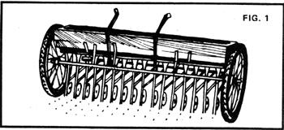
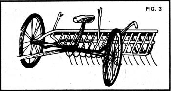

Hay is basically dried vegetation: usually a legume such as alfalfa or clover, or a grass such as timothy or brome. It's one crop that can be raised with proper care in any part of the country where weeds will grow, and it's a must for any self-sufficient farmer who keeps livestock.
The choice of plant (or plants) to be grown for hay depends on many factors: climate, availability of water, tonnage needed, type of livestock being fed, etc. Local preferences are usually a good guide. (A detailed study of the characteristics and requirements of forage crops is found in The Stockman's Handbook by M.E. Ensminger, available for $27.25 from The Interstate, Danville, Illinois, or from MOTHERS Bookshelf.MOTH ER.)
Whatever hay crop you choose can be grown either as part of a farm rotation plan or in a permanent meadow. The former system has the advantage of helping establish uniform soil fertility (particularly if one of the legumes is raised). The latter, however, provides stubble for winter pasture, helps to control erosion, and is particularly suitable for marginal land.
A plot of earth is prepared for forage crops in much the same manner as for most field and vegetable plantings except that if you're reseeding an old hayfield, you may omit plowing and merely disc the area. Soil tests should be made before seed is sown to determine any deficiencies and manure, lime, compost, ground rock, etc., spread as required. Hay has been grown for thousands of years without chemical fertilizers, and there's no need for them today. In fact, organically raised fodder is better for livestock and is less susceptible to insect infestation (which is quite rare on healthy soil).
Hayseed is planted like grain: spread either by hand (in the classic manner of a farm wife scattering chicken feed) or with a hand-cranked broadcaster available at low cost (around here, about $10.00-MOTHER.) from many hardware stores and seed houses.
A more uniform stand of hay is created by a grain drill (Fig. 1) a machine which is pulled by a team or tractor and plants the seeds in evenly spaced rows. You may be able to borrow a drill from a neighbor, or (here in Colorado, at least) you can hire a custom operator to do the work for a small charge per acre.
In that case the cereal is harvested at the end of the first season, while the hay is generally left uncut until the following year.
If irrigation is normally required to grow vegetables in your area, you'll find it profitable to give your hayfield the same treatment. In semi-arid regions like ours (with an average precipitation of 14 inches a year), artificially watered stands yield three to four times as much fodder as their parched counterparts. (Alfalfa, for example, requires 831 pounds of water to produce one pound of dried hay.)
Most hayfields will flourish for five years or more without reseeding. The only care necessary during that time is the spreading of fertilizers as needed and a periodic harvesting of the crop. One possible exception: Your locality could suffer an infestation of aphids or locusts some season with disastrous results. Whether or not you spray under such conditions is a matter of conscience. If you choose not to do so, you can reduce your losses substantially by cutting the hay immediately upon attack and drying and storing it fast enough to save it from total annihilation.
Even in a normal year, when you're not racing a horde of hungry pests, the timing of the hay harvest is very important. The reason for this is that as the forage crop's blossoms develop, its energy goes into producing seed and its nutritional value begins to decrease. Legumes should therefore be cut at 10 to 20 percent of full flower for maximum protein and vitamin content. Grass hay is usually put up a little later by the calendar (just when depends on the climate of your area), but still during early bloom.
Three steps are involved in turning a green crop into what can rightfully be called hay:
[1] cutting (followed by partial drying), [2] windrowing (followed by further drying), and [3] baling or stacking. Just how you go about these operations depends on the amount of the harvest and the availability of money, equipment, and manpower.
In days of yore, hay was cut with a scythe and windrowed and stacked with a fork (all by hand). Unless very small amounts (two acres or less) of the animal feed are being put up or unless one is very thoroughly hung up on the romantic tradition this method is now impractical. (Someone who's good with a scythe really ought to write an article on the subject. I've tried my hand with the old time tool and rate its proper use as an art.)
Nowadays, most hay cutting is done with a mechanical mower powered by a tractor or horse. True, the tractor-driven model is two or three times faster but you can buy its old-fashioned counterpart for almost nothing (after all, who uses horses anymore?) and you'll find it quite efficient. The mower shown in Fig. 2 cuts a seven foot swath and ought to be able to handle one acre per hour. (Incidentally, if horses or mules aren't available, such equipment can be pulled by a tractor running at very low speed.)
Freshly cut hay is allowed to dry (pray for clear weather!) for anywhere from a half day to three days after it's mowed. It's then windrowed, or raked into rows. The tool commonly
used for this purpose is the so called side delivery rake (Fig. 3), an ingenious horse- or tractor-drawn device which sweeps the stalks into neat columns with leaves turned inward and stems outward (to promote uniform drying).
The raking operation goes quite fast once you get the hang of it. It's a bit tricky, though, since two mowed swaths must usually be thrown together to form one windrow of suitable size for field curing. A steady hand on reins or steering wheel is required and slip-ups will probably bring some ridicule from neighboring farmers who derive considerable amusement from amateur efforts (as I learned during my first summer).
The windrowed hay is next allowed to dry until most of its moisture has evaporated. One simple test for dryness is to twist stalks taken at random and examine them for internal dampness. Another is to put some wisps in a small box along with a couple of teaspoons or so of salt. Shake the container vigorously for about one minute. If the salt remains dry, the hay is ready to store.
Baling or stacking wet hay is not only economically foolish since the fodder may mold or rot, and no livestock will eat it in that state but downright dangerous. Moisture in the stack can lead to spontaneous combustion a lesson many a farmer has learned by the light of his burning barn.
"Make hay while the sun shines" is the traditional rule. Nevertheless, a passing rain on the hayfield isn't quite as serious as it's often made out to be. just wait a day or so after the shower until the surface of the cut fodder has dried. Then make another run through the fields with the side-delivery rake to turn the windrows over so that their bottoms can dry. If you're lucky, very little of the fine, choice leaves and other tender foliage will "shatter" and fall off. An extended wet spell, however, is another matter a misfortune that can ruin a harvest. Keep tabs on the weather reports during haying, and-as noted, if you're so disposed pray.
Dried hay may be stored in stacks or in bales. The easiest way to gather the fodder for stacking is to have someone drive a truck or pull a trailer between windrows while several helpers fork on the harvest. If you lay ropes on the empty bed of the vehicle and loop them over the top of the finished heap, unloading will be a simple matter of tying the ends of the cords to some stationary object such as a tree and driving away.
Haystacks should be built to look like haystacks and if you don't know what I mean, you might do well to spend an afternoon in an art museum, with particular attention to the room that houses the Dutch masters. The larger the stack the better, because big piles have a smaller ratio of surface area to volume and soon pack down thus preventing rain from seeping in and ruining the hay.
To offset its lack of Old World flavor (which only the most discerning of livestock will notice) baled hay has the advantages of being easier to handle, requiring less time and labor to put up, and taking less storage space. The chief drawback here, however, is that you'll need a baler-a small factory in itself-which is often expensive both to buy and to maintain. (Beware of "bargains" we bought a twine tie baler, used, for $200 and put many gray hairs on our heads as a result.)
Unless you're putting up enough dried foliage say 15 to 20 acres to justify the purchase of a good used baler, I'd suggest that you either stack your hay or hire a custom operator to do the baling for you. A check on local rates may very well show that the service is less expensive than ownership of the necessary equipment.
A closing note that may be of special interest to communes and other groups: In most of this country's rural areas, it's possible to pick up some extra money during the summer by "bucking" hay (taking bales from the field and building them into a neat pile or putting them up in a barn's loft). You'll generally be paid at a fixed rate of so many cents per bale in the western half of the country and so much per hour back east. We've found that a bucking crew of a female driver and three men can handle an average of 500 bales a day.
Before you start calling me a sexist, by the way, please consider that every one of these solid blocks of fodder weighs about 75 pounds. I well remember the day when one of our woman members decided to help buck while the rest of us took turns driving. She ended the afternoon in tears of exhaustion. It's that kind of work which is why most farmers are more than willing to pay somebody else to do it for them. Before you commit yourself to bucking 10,000 bales, though, try working at the job on a trial basis for a day or two first just to make sure you want the money as much as you'll have to labor to get it.
|
 |
 |
|